Đường Ray Châu Âu
Hướng dẫn chơi chi tiết, có ví dụ và toàn bộ vé hành trình


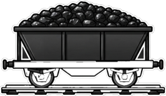
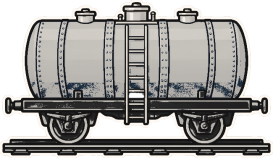

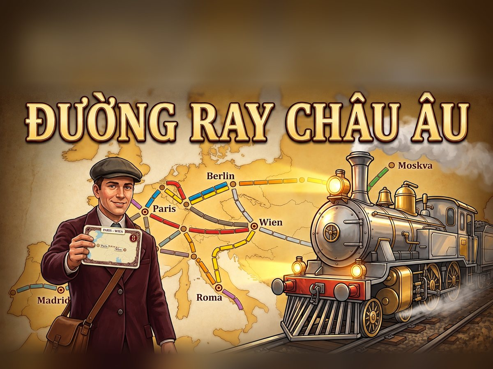
1Giới thiệu
Bạn và các đối thủ thi nhau xây mạng lưới đường sắt khắp châu Âu. Mỗi lượt bạn gom bài toa tàu cùng màu để chiếm các tuyến nối giữa hai thành phố, ghi điểm ngay khi chiếm. Bạn còn giữ các vé hành trình: nối được hai thành phố trên vé bằng tàu của mình thì cộng điểm, không nối được thì bị trừ.
Bản đồ châu Âu có 49 thành phố, 106 làn tuyến (trong đó 12 cặp đường đôi), 10 đường hầm và 15 tuyến phà. Tuyến dài nhất dài 5 ô.

Màn hình chơi: người chơi ở trên, bản đồ ở giữa, bên phải là chỗ lấy bài, vé của bạn và nhật ký.
2Thành phần
| Thành phần | Số lượng và công dụng |
|---|---|
| Bài toa tàu | 110 lá: 12 lá cho mỗi màu × 8 màu, cộng 14 lá Đầu máy (lá vạn năng, thay được mọi màu) |
| Vé hành trình | 50 vé: 6 vé dài (17 đến 21 điểm) và 44 vé thường (5 đến 12 điểm) |
| Toa tàu | 45 toa mỗi người, mỗi người một màu |
| Nhà ga | 3 nhà ga mỗi người |
| Thưởng | Đường liên tục dài nhất: +10 điểm cuối ván |
9 loại bài toa tàu
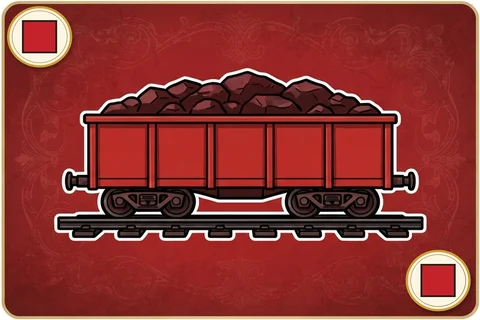
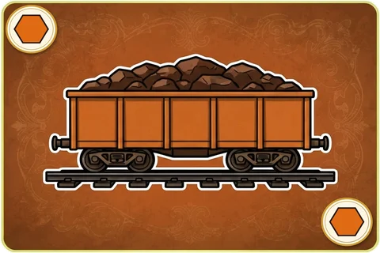
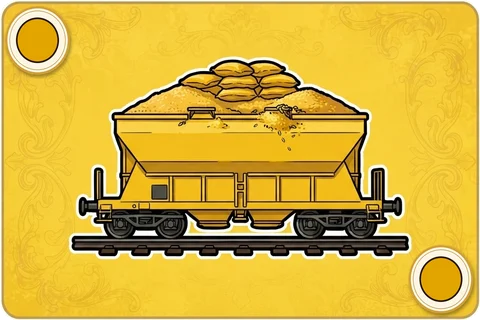
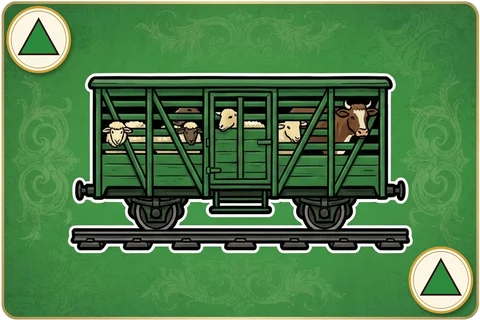
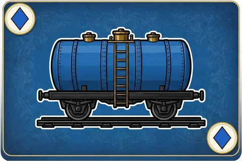
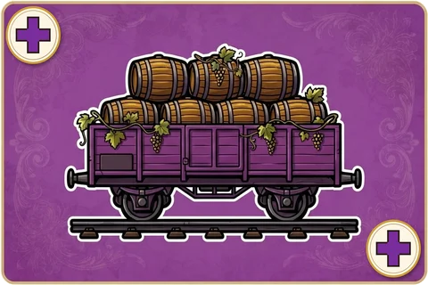
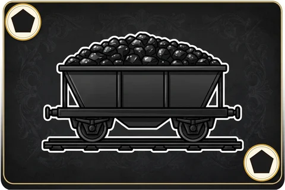
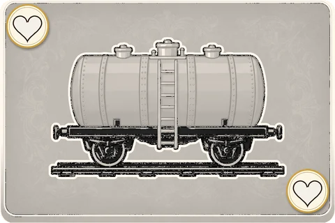
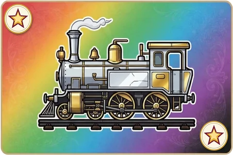
Mỗi màu có biểu tượng riêng ở góc lá (hình vuông, tròn, tam giác…) để dễ phân biệt. Lá Đầu máy nền cầu vồng, góc có ngôi sao.
3Chuẩn bị
- Mỗi người nhận 4 lá bài toa tàu. Lật ngửa 5 lá cạnh chồng bài úp để mọi người cùng chọn.
- Mỗi người được chia 1 vé dài và 3 vé thường, phải giữ ít nhất 2 vé (giữ cả 4 cũng được). Vé không giữ trả về đáy chồng vé.
- Mọi người tung 2 xúc xắc: tổng cao nhất đi thứ nhất, rồi lần lượt theo thứ tự điểm (bằng điểm thì tung lại). Ván mới tung lại từ đầu.
4Lượt chơi
Đến lượt, bạn làm đúng một trong 4 việc dưới đây. Không được vừa rút bài vừa chiếm tuyến trong cùng một lượt.
1Rút bài toa tàu
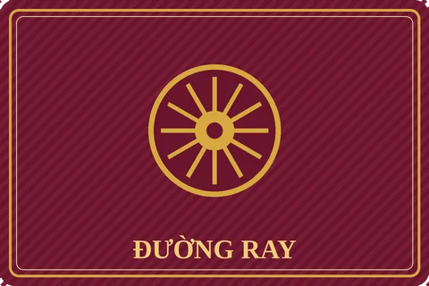
Lấy 2 lá, từ 5 lá ngửa hoặc chồng úp.
2Chiếm 1 tuyến
Đánh đủ lá cùng màu, đặt toa lên tuyến, ghi điểm ngay.
3Rút vé hành trình

Rút 3 vé, giữ ít nhất 1.
4Xây nhà ga
Trả 1, 2 rồi 3 lá cùng màu, đặt ga lên một thành phố trống.
Việc 1: rút bài toa tàu
- Lấy 2 lá. Mỗi lá chọn một trong 5 lá đang ngửa, hoặc lá trên cùng chồng úp. Lấy lá ngửa xong, lá mới được lật bổ sung ngay.
- Lấy một lá Đầu máy đang ngửa thì chỉ được lấy đúng lá đó, hết lượt. Lá thứ hai không được là Đầu máy ngửa.
- Rút trúng Đầu máy từ chồng úp thì vẫn tính 1 lá, bạn được lấy tiếp lá thứ hai.
- Nếu 3 trong 5 lá ngửa là Đầu máy, cả 5 lá bị bỏ và lật 5 lá mới.
- Không giới hạn số bài trên tay. Hết chồng úp thì xáo chồng bài bỏ làm chồng mới.
Việc 2: chiếm một tuyến
- Đánh ra số lá bằng số ô của tuyến, tất cả cùng màu với tuyến. Đầu máy thay được bất kỳ lá nào.
- Tuyến xám trả bằng một màu bất kỳ, miễn cả bộ cùng một màu.
- Đặt toa của bạn lên tuyến và ghi điểm ngay theo bảng dưới. Mỗi lượt chiếm tối đa 1 tuyến. Tuyến không cần nối với tuyến cũ của bạn.
- Bạn phải còn đủ toa trong kho để đặt lên tuyến.

Tuyến Paris–Marseille (Tím, 4 ô) đã bị chiếm: đoàn tàu của người chơi Đỏ nằm đè lên tuyến.

Tuyến xám Amsterdam–Frankfurt dài 2 ô.
Đường đôi

Đường đôi Madrid–Barcelona: hai làn song song, làn Trắng và làn Đỏ.
- Một người không được chiếm cả hai làn của cùng một đường đôi.
- Chơi 2 hoặc 3 người: một làn đã bị chiếm thì làn còn lại đóng với mọi người.
- Chơi 4 hoặc 5 người: hai người khác nhau mỗi người chiếm một làn.
Đường hầm

Đường hầm có viền nét đứt, ví dụ tuyến Barcelona–Bordeaux (Xanh dương, 3 ô).
- Đánh bộ bài như chiếm tuyến thường.
- Máy lật 3 lá trên cùng chồng bài úp.
- Mỗi lá lật ra trùng màu bạn vừa đánh, hoặc là Đầu máy, bạn phải trả thêm 1 lá cùng màu (hoặc Đầu máy).
- Đủ và muốn trả thì trả thêm, đặt toa, ghi điểm. Không đủ hoặc không muốn thì bỏ: lấy lại hết bài đã đánh, không mất gì, nhưng hết lượt.
- 3 lá lật ra luôn vào chồng bỏ.
- Trả thêm ít nhất 0 lá, nhiều nhất 3 lá.
- Nếu bạn đánh toàn Đầu máy, chỉ Đầu máy lật ra mới bắt trả thêm.
Phà

Tuyến phà London–Amsterdam dài 2 ô, có 2 ô in ngôi sao Đầu máy.
- Phà là tuyến vượt biển. Mỗi ô có ngôi sao cần 1 lá Đầu máy.
- Các ô còn lại trả bằng bài cùng một màu (phà luôn là tuyến xám).
- Tổng số lá vẫn bằng số ô. Điểm tính như tuyến thường.
Việc 3: rút vé hành trình
Rút 3 vé từ chồng vé, giữ ít nhất 1 (có thể giữ cả 3). Vé không giữ trả về đáy chồng. Vé giữ rồi thì không được bỏ nữa, kể cả khi không làm được.
Việc 4: xây nhà ga

Nhà ga Đỏ ở Lisboa. Tuyến Lisboa–Madrid là của người Xanh, hai tuyến Đỏ nằm hai bên.
- Đặt nhà ga lên một thành phố chưa có ga nào. Không cần có tuyến của bạn ở đó.
- Giá tăng dần: ga thứ 1 tốn 1 lá, ga thứ 2 tốn 2 lá cùng màu, ga thứ 3 tốn 3 lá cùng màu. Đầu máy thay được.
- Cuối ván, mỗi ga cho bạn mượn 1 tuyến của đối thủ đi vào thành phố đó để nối vé. Máy tự chọn tuyến mượn có lợi nhất.
- Tuyến mượn không cho điểm và không tính vào đường dài nhất.
- Ga nào không xây được +4 điểm cuối ván.
5Vé hành trình
 123
123- 1Tên hai thành phố cần nối: Paris – Moskva.
- 2Số điểm của vé: 17. Hoàn thành được cộng, không hoàn thành bị trừ đúng số này.
- 3Bản đồ nhỏ chỉ vị trí hai thành phố để bạn dễ tìm.
- Vé hoàn thành khi có một chuỗi tuyến liền nhau của bạn (cộng tuyến mượn qua nhà ga) nối hai thành phố. Đi vòng xa cũng được.
6 vé dài (17 đến 21 điểm)
Mỗi người được chia 1 vé dài lúc đầu. Vé dài không xuất hiện khi rút vé giữa ván.


44 vé thường (5 đến 12 điểm)
Bấm để xem toàn bộ 44 vé thường của bản đồ châu Âu


6Kết thúc và tính điểm
Vòng cuối
Khi một người kết thúc lượt mà chỉ còn 0, 1 hoặc 2 toa, mọi người (kể cả người đó) được đi thêm đúng 1 lượt. Sau đó ván kết thúc.
Cách tính điểm
- Điểm tuyến: đã cộng dần trong ván khi chiếm tuyến.
- Vé hành trình: vé hoàn thành cộng điểm, vé chưa hoàn thành trừ điểm.
- Đường liên tục dài nhất +10: chuỗi tuyến liền nhau của bạn có tổng số toa nhiều nhất. Được đi vòng, nhưng mỗi tuyến chỉ tính 1 lần. Bằng nhau thì tất cả đều được +10. Tuyến mượn qua ga không tính.
- Nhà ga chưa xây: +4 điểm mỗi ga.
Ai nhiều điểm nhất thắng. Bằng điểm thì ai hoàn thành nhiều vé hơn thắng.
93 + 10 (đường dài nhất) = 103
103 + 2 × 4 (2 ga chưa xây) = 111 điểm
7Mẹo dùng trong game
- Mỗi lượt có 60 giây, vòng đồng hồ ở góc bản đồ đếm ngược. Hết giờ máy tự chuyển lượt (đang chọn vé thì máy giữ vé giúp bạn).
- Bấm vào một tuyến để xem chú thích và nút chiếm. Tuyến viền vàng là tuyến bạn đang đủ bài để chiếm.
- Bấm vào thành phố để xây nhà ga (nút "Xây ga" ở khung lấy bài cho biết giá).
- Đi nhầm? Nút Đi lại cho phép hoàn tác tối đa 2 lần trong lượt của bạn.
- Khi chiếm tuyến, điểm "+N" bay lên khung người chơi. Ai hoàn thành vé, vé hiện ra lấp lánh cho mọi người cùng thấy.
8Mẹo cho người mới
- Tuyến dài lợi hơn nhiều: 1 tuyến 5 ô cho 10 điểm, còn 5 tuyến 1 ô chỉ cho 5 điểm.
- Chiếm sớm các tuyến then chốt vé bạn cần, nhất là chỗ chỉ có một đường đi qua.
- Đừng ôm quá nhiều vé khó: vé hỏng bị trừ đúng bằng số điểm của nó.
- Giữ vài Đầu máy cho phà và cho màu hiếm. Đừng lấy Đầu máy ngửa nếu bạn cần đủ 2 lá.
- Đường hầm có rủi ro: mang dư 1 đến 2 lá cùng màu trước khi thử.
- Theo dõi số toa của đối thủ. Ai còn khoảng 3 đến 5 toa là sắp tới vòng cuối.
- Nhà ga là cứu cánh khi bị chặn đường, nhưng mỗi ga không xây là 4 điểm.